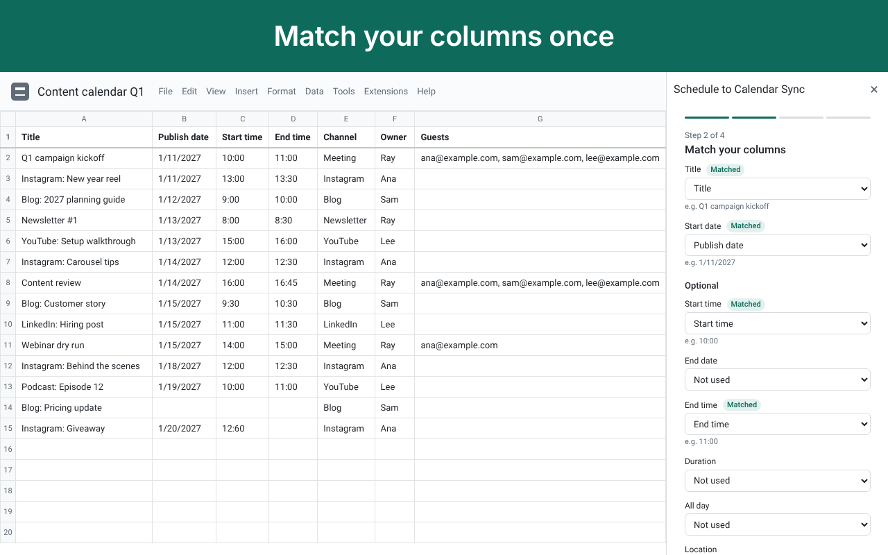

Help
- Getting started
- How columns are matched
- Dates and times
- Why a row didn't sync
- Auto-sync (Pro)
- Sorting and moving rows
- Copying the spreadsheet
- Removing events
- Plans and licence keys
- Privacy

Getting started
- Open the spreadsheet, then Extensions, Schedule to Calendar Sync, Open.
- Pick the tab that holds your schedule and check which row has the headers.
- Match your columns. Most are matched for you. Title and Start date are the only required ones.
- Pick a calendar. If the calendar and the spreadsheet use different time zones, choose which one your times are in.
- Press Preview to see every event that will be created, updated or removed, then Sync.
After the first sync, three columns appear at the end of your sheet: Sync ID, Event link and Sync status. You can hide Sync ID, but don't edit it: it ties the row to its event.
How columns are matched
Columns are found by their header text, so their order doesn't matter and you can insert columns at any time. A header matches when it is one of these words, or contains one of them.
| Field | Header words | What it accepts |
|---|---|---|
| Title (required) | title, event, name, subject, summary, task, activity, session, class | Any text. A row without a title waits. |
| Start date (required) | start date, date, start, day, when, from | A date cell, a date-time cell, a formula that returns a date, or text like 2026-11-06, 6/11/2026, Nov 6 2026 |
| Start time | start time, time, begins, from time | A time cell, or text like 9:00, 9am, 14:30. Blank means all day. |
| End date | end date, end, until, to, finish | Like Start date. For all-day events the end date is included. |
| End time | end time, to time, finish time, ends | Like Start time |
| Duration | duration, length, minutes, mins, hours | 90, 90 min, 1.5 h, 1h 30m, 1:30. A plain number is hours when the header says hours. |
| All day | all day, allday | A checkbox, or yes, y, x, 1 |
| Location | location, where, venue, address, place, room | Text |
| Description | description, notes, details, agenda, info | Text. Line breaks are kept. |
| Guests (Pro) | guests, attendees, invitees, participants, emails | Emails separated by commas, semicolons, spaces or line breaks |
| Calendar (Pro) | calendar | A calendar's name exactly as in Google Calendar, or its ID |
| Color (Pro) | color, colour | Lavender, Sage, Grape, Flamingo, Banana, Tangerine, Peacock, Graphite, Blueberry, Basil, Tomato, a number 1 to 11, or a word from your color rules |
| Status (Pro) | status, state | A word from the cancel list (cancelled, cancel, deleted and so on) removes the event |
| Repeat (Pro) | repeat, repeats, recurrence, frequency | daily, weekdays, weekly, every 2 weeks, biweekly, monthly, yearly, or an RRULE: line |
| Repeat until (Pro) | repeat until, until date, ends on | A date |
| Reminder (Pro) | reminder, reminders, alert, notify | 10, 30 min, 1 hour, 1 day. Up to 5, separated by commas. |
| Google Meet (Pro) | meet, video, google meet, conference | A checkbox, or yes, y, x, 1 |
| Time zone (Pro) | time zone, timezone, tz | A zone name like Europe/London |
If one cell holds both the date and the time, match it to Start date only. If neither End nor Duration is matched, timed events last the default length (60 minutes unless you change it).
Dates and times
- Formulas work. A cell like
=A2+7is read by its result, the same as a typed date. - Time zones. By default your times are read in the calendar's time zone. If the spreadsheet uses a different zone, setup asks which one you mean. You can change it in Settings. With Pro, a Time zone column sets the zone row by row.
- Overnight. An end time earlier than the start time, with no end date, ends the next day. 22:00 to 02:00 is a four-hour event.
- All-day events. A row with no start time, or with All day ticked, is an all-day event. The end date in your sheet is the last day of the event, so 6 Nov to 8 Nov covers three days.
- Text dates. 2026-11-06 always works. 6/11/2026 is read day first unless your spreadsheet's locale is United States, Canada or the Philippines. A part over 12 settles the order.
Why a row didn't sync
The Sync status column says what happened to each row. Fix the row and sync again.
| Sync status | What to do |
|---|---|
| Synced 2027-01-08 14:03 | Nothing. The event was created or updated at that time. |
| Waiting: add a title | The row has data but no title. Add one. |
| Waiting: add a start date | Add a start date. |
| Check: end is before start | Fix the end date or time so it comes after the start. |
| Check: can't read the date "..." | Type the date as 2026-11-06, or format the cell as a date. |
| Check: can't read the time "..." | Type the time as 9:00, 9am or 14:30. |
| Check: can't read the duration "..." | Use 90, 90 min, 1.5 h or 1h 30m. |
| Check: no calendar named "..." | Use the calendar's exact name from Google Calendar. You must be able to add events to it. |
| Check: "..." isn't an email | That guest was skipped; the event still synced. Fix the address. |
| Check: unknown color "..." | Use one of the 11 color names, or add a color rule in Settings. |
| Check: unknown time zone "..." | Use a zone name like Europe/London or America/New_York. |
| Check: can't read the repeat "..." | Use daily, weekdays, weekly, every 2 weeks, monthly or yearly. |
| Removed (status ...) | The Status column says cancel, so the event was removed. Clear the status to bring it back. |
| Removed (row deleted) | The row was deleted and Settings says to remove its event. |
| Not synced yet: Google Calendar was busy. Will retry. | Google limited how fast events can be added. Sync again in a minute. |
| Not synced: no permission on that calendar | Ask the calendar's owner for "Make changes to events", or pick another calendar. |
| Pro feature: ... | A Pro column has a value but you're on the Free plan. The rest of the event synced. |
| Limit: 5,000 synced rows per spreadsheet | Move older rows to a new spreadsheet. |
If the sidebar says a column is gone, a matched header was renamed or deleted. Open Edit setup and match it again.
Auto-sync (Pro)
- Turn it on from the sidebar's Home screen. After that, editing a row updates its event within seconds.
- Edits made by people trigger it. Changes made by formulas, imports or other add-ons don't, because Google Sheets doesn't report them. Keep "Also sync when the spreadsheet opens" on to catch those.
- Auto-sync runs as the person who turned it on, using their Pro licence. Only they can turn it off. If their licence ends, auto-sync stops and they get one email.
- If something fails during auto-sync, the person who turned it on gets at most one email a day.
Sorting and moving rows
Sort the whole sheet (Data, Sort sheet) so each row's Sync ID moves with it. Sorting only some columns separates rows from their Sync ID: their events are then relabelled on the next sync, never lost or duplicated, but it's best avoided.
Copying a synced row is fine: the copy gets its own Sync ID and its own event.
Copying the spreadsheet
A copy of the spreadsheet creates its own events. It never changes or removes the original's events. Open the copy, set it up, and sync.
Removing events
- Undo last sync (Settings) removes the events the last Sync now created.
- Remove all events this sheet created (Settings) removes every event this spreadsheet made, in every calendar it used. Type REMOVE to confirm.
- Status column (Pro): set Status to Cancelled to remove one event; clear it to bring the event back.
- Deleted rows (Pro): in Settings, choose "Remove its event". If a sync would remove more than 10 events, or more than a fifth of a tab's events at once, nothing is removed until you confirm in the sidebar.
The add-on never changes events it didn't create.
Plans and licence keys
Free: one spreadsheet at a time, one tab, one calendar, Sync now, preview, undo, and every date and time feature. You can move the free spreadsheet slot at any time.
Pro ($49 a year or $12 a month) adds auto-sync, routing to any calendar, guests and invitations, Google Meet links, colors, repeats, reminders, cancelling by status, removing events of deleted rows, a time zone column, and any number of tabs and spreadsheets. Organization ($499 a year) gives Pro to everyone at your email domain.
After you buy, your licence key arrives by email. In the sidebar, open Upgrade, paste the key under "Already have a key?" and press Activate. The key works for the Google account you entered at checkout. Lost it? Use Resend my key at the manage page.
Privacy
The add-on asks for the least access it can:
- This spreadsheet only, to read your schedule rows and write the Sync ID, Event link and Sync status columns. It never reads your other spreadsheets.
- Calendar events, to create, update and remove the events that come from your rows. It never changes calendar settings or sharing.
- Your calendar list, so you can pick a calendar, and to read each calendar's time zone.
- Your email address, to match your licence key to your account.
- Sending email, only to you, when auto-sync fails or stops.
Your setup and a short sync history are stored inside this spreadsheet's add-on storage. Your licence key is stored in your Google account's add-on storage. Nothing is sent to BrightDesk: there is no BrightDesk server that receives your sheet or calendar data. Full policy: the privacy policy.
Still stuck?
Write to us at brightdesk.dev/support with the Sync status text you see. We usually reply within 24 hours.